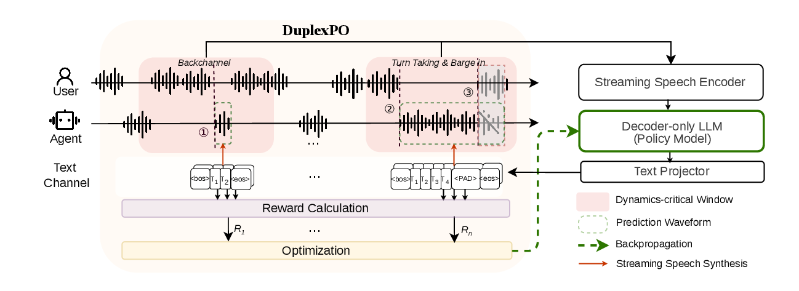
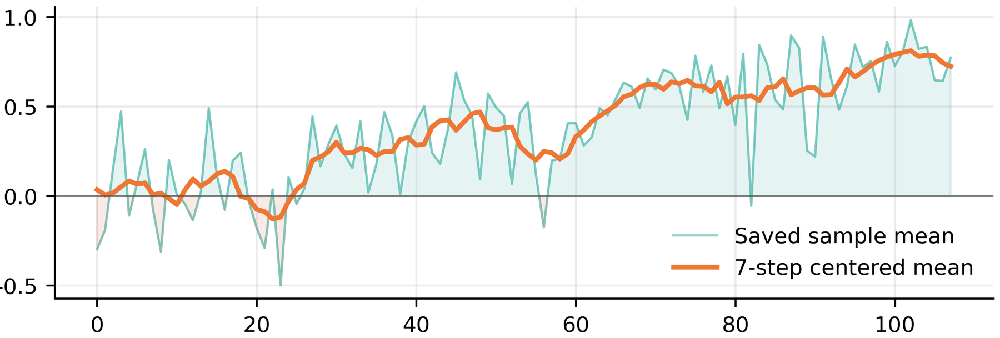
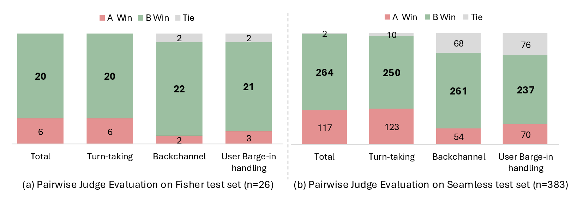

waits through hesitation
Listen for silence where a turn-based agent would prematurely answer.
Listen for silence where a turn-based agent would prematurely answer.
The model starts after the user completes the relevant intent.
Backchannels support the speaker without taking over the floor.
Participation is regulated so the dialogue keeps moving.
Recent full-duplex spoken dialogue models have demonstrated compelling progress toward human-like interaction, enabling agents to respond with low latency, produce backchannels, and handle user barge-ins. Yet these improvements in conversational dynamics often come with weaker reasoning and instruction-following abilities, revealing a potential tension between interactive dynamics and intelligence capability. In this paper, we argue that such an intelligence–dynamics trade-off is not fundamental: conversational dynamics can instead be learned as a separate real-time decision policy from human dialogue data. To this end, we propose DuplexPO, a reinforcement learning (RL) framework that decouples when to speak from what to say. It preserves the semantic response capability of an instruction-tuned assistant, while optimizing its temporal interaction behavior over selected high-impact windows from long human conversations. To quantitatively optimize these dynamics, we formulate the Factorized Conversational Dynamics Reward (FCDR) to enable fine-grained temporal credit assignment for turn initiation, backchanneling, yielding, and regularized participation. The policy is then optimized with a GRPO-style objective. Experiments show that DuplexPO substantially improves timely backchannels, smooth turn-taking, and barge-in handling, while maintaining strong reasoning and instruction-following performance. Moreover, improvements in dynamics-oriented metrics are reflected in better user experience, suggesting that optimizing conversational timing as a standalone objective can promote more natural full-duplex interaction.
DuplexPO treats full-duplex interaction as a local policy-learning problem. Instead of optimizing whole conversations, it focuses on short dynamics-critical windows where timing decisions actually matter: backchannels, turn transitions, and user barge-ins.
The demo below is organized around those same behaviors. Each audio case is a listening probe for the policy: does it wait, acknowledge, enter, or yield at the right moment?

Sample short regions around annotated speaking events instead of training on entire dialogues.
Condition on the prior context, then sample the policy only inside the critical window.
Assign event-level credit for onset timing, backchannel timing, yielding, and participation.
Use group-normalized rewards while regularizing toward the reference SFT policy.
Benchmark results
We evaluate DuplexPO along two axes: full-duplex conversational dynamics and model intelligence. The dynamics benchmarks test whether the model enters, backchannels, and yields at the right time. The intelligence benchmarks check whether this timing policy preserves factual QA, instruction following, speech understanding, and reasoning.
lowest onset MAE
backchannel yield
turn-taking latency
yield rate


DuplexPO is compared with open full-duplex baselines and two SFT controls. Lower onset MAE is better; higher yield rates indicate cleaner floor control.
| Dataset | Method | Onset MAE | Turn yield | Backchannel yield |
|---|---|---|---|---|
| Fisher | Moshi | 1.99 | 76.5% | 66.7% |
| Fisher | PersonaPlex | 1.50 | 80.3% | 69.2% |
| Fisher | SFT Baseline | 0.98 | 92.1% | 57.1% |
| Fisher | SFT Dynamics | 1.14 | 78.9% | 57.1% |
| Fisher | DuplexPO | 0.69 | 98.7% | 100.0% |
| Seamless | Moshi | 2.16 | 69.0% | 71.3% |
| Seamless | PersonaPlex | 1.77 | 79.6% | 84.0% |
| Seamless | SFT Baseline | 1.22 | 78.5% | 79.4% |
| Seamless | SFT Dynamics | 1.34 | 63.0% | 63.4% |
| Seamless | DuplexPO | 1.03 | 93.6% | 93.3% |
FDB-v3 exposes premature interruption during disfluent user turns. DuplexPO keeps latency low while yielding reliably.
| Method | Latency | VIR | Yield |
|---|---|---|---|
| Moshi | 0.44s | 12.0% | 71.9% |
| PersonaPlex | 1.41s | 15.0% | 66.7% |
| SFT Baseline | 7.33s | 8.0% | 64.8% |
| SFT Dynamics | 14.24s | 4.0% | 93.3% |
| DuplexPO | 0.24s | 5.0% | 100.0% |
Timing optimization does not trade away the SFT model's semantic capability; DuplexPO stays aligned or improves across representative benchmarks.
| Metric | SFT | DuplexPO |
|---|---|---|
| LlamaQ | 72.0 | 75.3 |
| WebQ | 44.3 | 44.5 |
| AlpacaEval | 3.43 | 3.68 |
| CommonEval | 3.48 | 3.74 |
| OpenBookQA | 72.2 | 73.7 |
| MMSU | 54.9 | 56.2 |